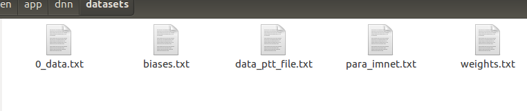

PMLS单机版机器学习
1. Bösen and Strads
PMLS 包括两个用于编写和运行 ML 应用程序的平台: Bösen 用于数据并行执行，Strads 用于模型并行执行。每个可以即时运行的 PMLS 应用程序要么是 Bösen 应用程序，要么是 Strads 应用程序。
1.1 Bösen app
1.2 Strads app
2. Deep Neural Network
2.1 训练
进入DNN app
cd bosen/app/dnn
编译
make #This will put the DNN binary in the subdirectory bin/
创建一个模拟数据集
script/gen_data.sh 10000 360 2001 1 datasets
修改 script/run_local.py中的 app_dir
app_dir = "/home/user/bosen/app/dnn"
使用四个线程在本地机器上执行程序
./script/launch.py
执行结果
DNN 应用程序在后台运行(进度输出到 stdout)。应用程序终止后，你应该得到2个输出文件:
datasets/weights.txt
datasets/biases.txt
weights.txt保存权重矩阵。顺序是: 第一层(输入层)和第二层(第一隐藏层)之间的权重矩阵，第二层和第三层之间的权重矩阵等。所有矩阵按行主要顺序保存，每一行对应一行

2.2 测试
修改script/predict.py下的app_dir
app_dir = "/home/user/bosen/app/dnn"
模型预测
./script/launch_pred.py
执行结果
应用程序终止后，您应该得到每个输入数据文件的预测结果文件。请检查放置数据文件的目录。预测结果文件的每一行都包含对应数据的预测。
3. K-Means Clustering
The app can be found at bosen/app/kmeans. From this point on, all instructions will assume you are at bosen/app/kmeans. After building the main PMLS libraries, you can build kmeans:
make -j2
Then
# Create run script from template
cp script/launch.py.template script/launch.py
chmod +x script/launch.py
./script/launch.py
The last command runs kmeans using the provided sample dataset dataset/sample.txt and output the found centers in output/out.centers and the cluster assignments in output/out.assignmentX.txt where X is the worker ID (each worker outputs cluster assignments in its partition).
result